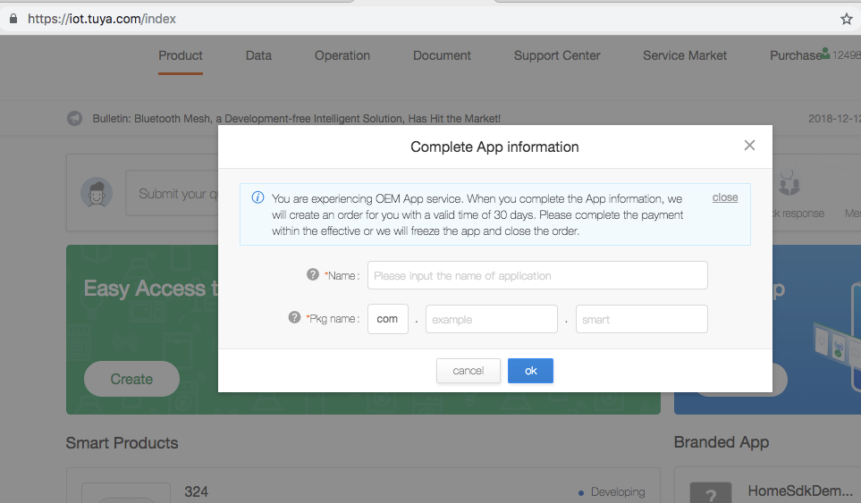
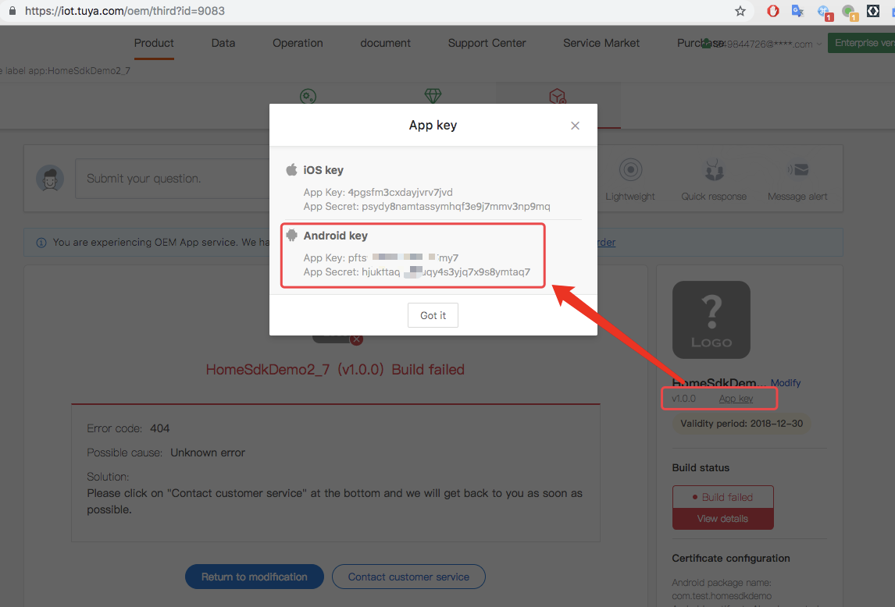
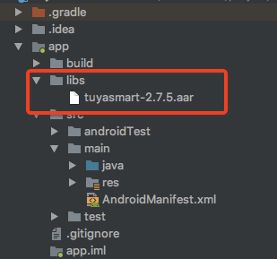

The Tuya Smart Home SDK provides the home-based interface encapsulation for the hardware and Tuya Cloud communication to accelerate the App R&D. Main functions of it include:
Go to the TuyaSmart iot platformhttps://iot.tuya.com. Create an app by selecting "Create App", fill in the app name and package name.

After the creation is successful. View the application key. Get the app's App Key and App Secret.

Download the aar package of TuyaHomeSdk on GitHub
Import the downloaded aar package of TuyaHomeSdk in the libs directory of the project's app directory.

Add the following configuration to the build.gradle in the app directory.
defaultConfig {
ndk {
abiFilters "armeabi-v7a", "x86"
}
}repositories {
flatDir {
dirs 'libs'
}
}dependencies {
implementation 'com.alibaba:fastjson:1.1.67.android'
implementation 'com.squareup.okhttp3:okhttp-urlconnection:3.6.0'
implementation 'io.reactivex.rxjava2:rxandroid:2.0.1'
implementation 'io.reactivex.rxjava2:rxjava:2.1.7'
implementation 'org.eclipse.paho:org.eclipse.paho.client.mqttv3:1.2.0'
implementation(name: 'tuyasmart-2.7.5', ext: 'aar')
}android {
lintOptions {
abortOnError false
disable 'InvalidPackage'
}
compileOptions {
sourceCompatibility JavaVersion.VERSION_1_7
targetCompatibility JavaVersion.VERSION_1_7
}
packagingOptions {
exclude 'META-INF/LICENSE.txt'
exclude 'META-INF/NOTICE'
exclude 'META-INF/LICENSE'
exclude 'META-INF/NOTICE.txt'
exclude 'META-INF/INDEX.LIST'
exclude 'META-INF/services/javax.annotation.processing.Processor'
}
}1. Configure appkey and appSecret under <application> in the AndroidManifest.xml file.
<meta-data
android:name="TUYA_SMART_APPKEY"
android:value="************" />
<meta-data
android:name="TUYA_SMART_SECRET"
android:value="***********" />2. Add the necessary permission
<!-- sdcard -->
<uses-permission android:name="android.permission.WRITE_EXTERNAL_STORAGE" />
<uses-permission android:name="android.permission.READ_EXTERNAL_STORAGE" />
<uses-permission android:name="android.permission.READ_PHONE_STATE" android:required="false"/>
<uses-permission android:name="android.permission.INTERNET" />
<uses-permission android:name="android.permission.CHANGE_NETWORK_STATE" />
<uses-permission android:name="android.permission.CHANGE_WIFI_STATE" />
<uses-permission android:name="android.permission.ACCESS_NETWORK_STATE" />
<uses-permission android:name="android.permission.ACCESS_WIFI_STATE" />
<uses-permission android:name="android.permission.WAKE_LOCK"android:required="false" />
<!-- added from 2.7.2 -->
<uses-permission android:name="android.permission.CHANGE_WIFI_MULTICAST_STATE" android:required="false"/>3. Add the necessary service and receiver to <application>.
<service
android:name="com.tuya.smart.mqtt.MqttService"
android:stopWithTask="true" />
<receiver android:name="com.tuya.smart.android.base.broadcast.NetworkBroadcastReceiver">
<intent-filter>
<action android:name="android.net.conn.CONNECTIVITY_CHANGE" />
</intent-filter>
</receiver>
<service
android:name="com.tuya.smart.android.hardware.service.GwBroadcastMonitorService"
android:exported="true"
android:label="UDPService"
android:process=":monitor">
<intent-filter>
<action android:name="tuya.intent.action.udp" />
<category android:name="tuya" />
</intent-filter>
</service>
<service
android:name="com.tuya.smart.android.hardware.service.DevTransferService"
android:label="TCPService">
<intent-filter>
<action android:name="tuya.intent.action.tcp" />
<category android:name="tuya" />
</intent-filter>
</service>Arrange aliasing configuration in corresponding proguard-rules.pro files.
#fastJson
-keep class com.alibaba.fastjson.**{*;}
-dontwarn com.alibaba.fastjson.**
#netty
-keep class io.netty.** { *; }
-dontwarn io.netty.**
#mqtt
-keep class org.eclipse.paho.client.mqttv3.** { *; }
-dontwarn org.eclipse.paho.client.mqttv3.**
-dontwarn okio.**
-dontwarn rx.**
-dontwarn javax.annotation.**
-keep class com.squareup.okhttp.** { *; }
-keep interface com.squareup.okhttp.** { *; }
-keep class okio.** { *; }
-dontwarn com.squareup.okhttp.**
-keep class com.tuya.**{*;}
-dontwarn com.tuya.**The TuyaHomeSdk is the outbound interface of the Smart Home, and the operations include network configuration, initiation, control, room, group and ZigBee.
It is used to initiate components of communication services, etc.
public class TuyaSmartApp extends Application {
@Override
public void onCreate() {
super.onCreate();
TuyaHomeSdk.init(this);
}
}The following interface needs to be invoked to log out of the App.
TuyaHomeSdk.onDestroy();The mobile phone verification code login function needs to first call the verification code sending interface and send the verification code. Then call the phone verification code verification interface. Fill in the received verification code into the corresponding parameters.
TuyaHomeSdk.getUserInstance().getEmailValidateCode(mCountryCode, mEmail, mIValidateCallback);private IValidateCallback mIValidateCallback = new IValidateCallback() {
@Override
public void onSuccess() {
mHandler.sendEmptyMessage(MSG_SEND_VALIDATE_CODE_SUCCESS);
}
@Override
public void onError(String s, String s1) {
getValidateCodeFail(s, s1);
}
};registerAccountWithPhone interface mobile account to registerTuyaHomeSdk.getUserInstance().registerAccountWithPhone(mCountryCode, mPhoneNum, mView.getPassword(), mView.getValidateCode(), mIRegisterCallback);Use mobile phone password for login.
TuyaHomeSdk.getUserInstance().loginWithPhonePassword(mCountryCode, mPhoneNum, mView.getPassword(), mILoginCallback);In the mILoginCallback callback success, you can jump to the home page and other operations.
private ILoginCallback mILoginCallback = new ILoginCallback() {
@Override
public void onSuccess(User user) {
loginSuccess();
}
public void onError(String errorCode, String errorMsg) {
Message msg = MessageUtil.getCallFailMessage(MSG_LOGIN_FAIL, errorCode, errorMsg);
mHandler.sendMessage(msg);
}
};The mobile phone verification code login function needs to first call the verification code sending interface and send the verification code. Then call the phone verification code verification interface. Fill in the received verification code into the corresponding parameters.
TuyaHomeSdk.getUserInstance().getValidateCode(mPhoneCode, mView.getPhone(), new IValidateCallback() {
@Override
public void onSuccess() {
mHandler.sendEmptyMessage(MSG_SEND_VALIDATE_CODE_SUCCESS);
}
@Override
public void onError(String s, String s1) {
getValidateCodeFail(s, s1);
}
});TuyaHomeSdk.getUserInstance().loginWithPhone(mPhoneCode, phoneNumber, code, new ILoginCallback() {
@Override
public void onSuccess(User user) {
mHandler.sendEmptyMessage(MSG_LOGIN_SUCCESS);
}
@Override
public void onError(String s, String s1) {
Message msg = MessageUtil.getCallFailMessage(MSG_LOGIN_ERROR, s, s1);
mHandler.sendMessage(msg);
}
});TuyaHomeSdk.getUserInstance().getValidateCode(mCountryCode, mPhoneNum, mIValidateCallback);TuyaHomeSdk.getUserInstance().resetPhonePassword(mCountryCode, mPhoneNum, mView.getValidateCode(), mView.getPassword(), mIResetPasswordCallback);TuyaHomeSdk.getUserInstance().getRegisterEmailValidateCode(mCountryCode,mEmail,iResultCallback);TuyaHomeSdk.getUserInstance().registerAccountWithEmail(mCountryCode, mEmail, mView.getPassword(), mView.getValidateCode(),mIRegisterCallback);TuyaHomeSdk.getUserInstance().loginWithEmail(mCountryCode, userName, password, mLoginCallback);TuyaHomeSdk.getUserInstance().getEmailValidateCode(mCountryCode, mEmail, mIValidateCallback);TuyaHomeSdk.getUserInstance().resetEmailPassword(mCountryCode, mEmail, mView.getValidateCode(), mView.getPassword(), mIResetPasswordCallback);When the user account is switched, you need to call the logout interface.
@Override
public void logout() {
TuyaHomeSdk.getUserInstance().logout(new ILogoutCallback() {
@Override
public void onSuccess() {
resultSuccess(WHAT_SETTING_LOGOUT_SUCCESS, true);
}
@Override
public void onError(String errorCode, String errorMsg) {
resultError(WHAT_SETTING_LOGOUT_ERROR, errorCode, errorMsg);
}
});
}
Because of abnormality or long-time absence of operation for 45 or more days, the session will become invalid, and user has to log out of the App and log in again to obtain the session.
TuyaSdk.setOnNeedLoginListener(new INeedLoginListener() {
@Override
public void onNeedLogin(Context context) {
Intent intent = new Intent(context, LoginActivity.class);
if (!(context instanceof Activity)) {
intent.addFlags(Intent.FLAG_ACTIVITY_NEW_TASK);
}
startActivity(intent);
}
});TuyaHomeSdk.getHomeManagerInstance().createHome(homeName,
lon, lat, geoName, roomList, new ITuyaHomeResultCallback() {
@Override
public void onSuccess(HomeBean homeBean) {
}
@Override
public void onError(String errorCode, String errorMsg) {
}
});TuyaHomeSdk.getHomeManagerInstance().queryHomeList(new ITuyaGetHomeListCallback() {
@Override
public void onSuccess(List<HomeBean> homeList) {
}
@Override
public void onError(String errorCode, String errorMsg) {
}
});TuyaHomeSdk.newHomeInstance(homeId).getHomeDetail(new ITuyaHomeResultCallback() {
@Override
public void onSuccess(HomeBean homeBean) {
}
@Override
public void onError(String errorCode, String errorMsg) {
}
});Get Network Configuration Token
/**
* @param homeId(Reference family management section)
* @param callback
*/
TuyaHomeSdk.getActivatorInstance().getActivatorToken(homeId, new ITuyaActivatorGetToken() {
@Override
public void onSuccess(String token) {
}
@Override
public void onFailure(String s, String s1) {
}
});Initialize The Network Configuration Parameter
/**
* @param token: The activation key required for network configuration.
* @param ssid: Name of the Wifi used by devices in working after the network isconfigured. (Home network)
* @param password: Password of the Wifi used by devices in working after the network is configured. (Home network)
* @param activatorModel: Currently, the following two methods are used for network configuration of devices.
ActivatorModelEnum.TY_EZ: The EZ mode network configuration is enabled is this parameter is transfered.
ActivatorModelEnum.TY_AP: The AP mode network configuration is enabled is this parameter is transfered.
* @param timeout: The timeout for the network configuration is set to 100s by default.
* @param context: The context that is needed to be transferred to the activity.
*/EZ Mode Configuration
ITuyaActivator mTuyaActivator = TuyaHomeSdk.getActivatorInstance().newMultiActivator(new ActivatorBuilder()
.setSsid(ssid)
.setContext(context)
.setPassword(password)
.setActivatorModel(ActivatorModelEnum.TY_EZ)
.setTimeOut(CONFIG_TIME_OUT)
.setToken(token)
.setListener(this));AP Mode Configuration
ITuyaActivator mTuyaActivator = TuyaHomeSdk.getActivatorInstance().newActivator(new ActivatorBuilder()
.setSsid(ssid)
.setContext(context)
.setPassword(password)
.setActivatorModel(ActivatorModelEnum.TY_AP)
.setTimeOut(CONFIG_TIME_OUT)
.setToken(token)
.setListener(this));Configuration Method Invocation
mTuyaActivator.start(); // Start configuration
mTuyaActivator.stop(); // Stop configuration
mTuyaActivator.onDestroy(); // Exit the page to destroy some cache data and monitoring data.Configuration Result Callback
ITuyaSmartActivatorListener listener = new ITuyaSmartActivatorListener() {
@Override
public void onError(String errorCode, String errorMsg) {
}
@Override
public void onActiveSuccess(DeviceBean deviceBean) {
}
@Override
public void onStep(String step, Object data) {
}
})Get Network Configuration Token
/**
* @param homeId(Reference family management section)
* @param callback
*/
TuyaHomeSdk.getActivatorInstance().getActivatorToken(homeId, new ITuyaActivatorGetToken() {
@Override
public void onSuccess(String token) {
}
@Override
public void onFailure(String s, String s1) {
y
}
});Configuration Method Invocation
// Initialize listener
ITuyaSmartActivatorListener listener = new ITuyaSmartActivatorListener() {
@Override
public void onError(String errorCode, String errorMsg) {
}
@Override
public void onActiveSuccess(DeviceBean deviceBean) {
}
@Override
public void onStep(String step, Object data) {
}
})
ITuyaActivator mITuyaActivator = TuyaHomeSdk.getActivatorInstance().newGwActivator(new TuyaGwActivatorBuilder()
.setToken(token)
.setTimeOut(100)
.setContext(this)
.setListener(listener);
// Start network configuration
mITuyaActivator.start()
// Stop network configuration
mITuyaActivator.stop()
// Exit the page to clean up
mITuyaActivator.onDestroy()Configuration Method Invocation
TuyaGwSubDevActivatorBuilder builder = new TuyaGwSubDevActivatorBuilder()
// Setting the gateway ID
.setDevId(mDevId)
// Setting the time-out period for network configuration
.setTimeOut(100)
.setListener(new ITuyaSmartActivatorListener() {
@Override
public void onError(String s, String s1) {
}
@Override
public void onActiveSuccess(DeviceBean deviceBean) {
}
@Override
public void onStep(String s, Object o) {
}
});
ITuyaActivator mTuyaGWActivator = TuyaHomeSdk.getActivatorInstance(). newGwSubDevActivator(builder);
// Start network configuration
mTuyaGWActivator.start();
// Stop network configuration
mTuyaGWActivator.stop();
// Destroy
mTuyaGWActivator.onDestory();Obtain the device list of product when the group is not created.
//the group is not created, parameter groupId must be an integer 0
TuyaHomeSdk.newHomeInstance("homeId").queryDeviceListToAddGroup(groupId, "productId", new IGetDevsFromGroupByPidCallback() {
@Override
public void onSuccess(List<GroupDeviceBean> bizResult) {
}
@Override
public void onError(String errorCode, String errorMsg) {
}
});Obtain the device list of a group when the group is created.
TuyaHomeSdk.newHomeInstance("homeId").queryDeviceListToAddGroup(groupId, "productId", new IGetDevsFromGroupByPidCallback() {
@Override
public void onSuccess(List<GroupDeviceBean> bizResult) {
}
@Override
public void onError(String errorCode, String errorMsg) {
}
});TuyaHomeSdk.newHomeInstance("homeId").createNewGroup("productId", "name", devIds, new ICreateGroupCallback() {
@Override
public void onSuccess(long groupId) {
//return groupId
}
@Override
public void onError(String errorCode, String errorMsg) {
}
});TuyaHomeSdk.newGroupInstance(groupId).updateDeviceList(deviceIds, new IResultCallback() {
@Override
public void onError(String s, String s1) {
}
@Override
public void onSuccess() {
}
});TuyaHomeSdk.newGroupInstance(groupId).dismissGroup(new IResultCallback() {
@Override
public void onError(String s, String s1) {
}
@Override
public void onSuccess() {
}
});TuyaHomeSdk.newGroupInstance(groupId).renameGroup(titleName, new IResultCallback() {
@Override
public void onError(String s, String s1) {
}
@Override
public void onSuccess() {
}
});* Instantiation of groups
* @param groupId group Id
ITuyaGroup mITuyaGroup= TuyaHomeSdk.newGroupInstance(groupId);* Registering group callback event
* @param listener callback
mITuyaGroup.registerGroupListener(new IGroupListener() {
@Override
public void onDpUpdate(long l, String s) {
}
@Override
public void onGroupInfoUpdate(long l) {
}
@Override
public void onGroupRemoved(long l) {
}
});
* Cancel group callback event
mITuyaGroup.unRegisterGroupListener();* Sending group control command
* @param command control command
* @param listener callback
mTuyaGroup.publishDps(String command,IControlCallback listener);Example Codes
//Code segment for switching on the light in a group
LampBean bean = new LampBean();
bean.setOpen(true);
HashMap<String, Object> hashMap = new HashMap<>();
hashMap.put(STHEME_LAMP_DPID_1, bean.isOpen());
mTuyaGroup.publishDps(JSONObject.toJSONString(hashMap),callback)；Notes
The returned result of a command sent from a group means that the command is sent to the cloud successfully, and it does not mean that the device has been actually controlled.For obtaining the group data locally, the data cannot be obtained before the initialization of Home (invoking getHomeDetail() or getHomeLocalCache).
* Obtaining group data bean locally
* @param groupId group Id
* @return GroupBean class of group data
TuyaHomeDataManager.getInstance().getGroupBean(long groupId);
* Obtaining a list of group data locally
* @return List<GroupBean> group list
TuyaHomeDataManager.getInstance().getGroupDeviceList(long groupId);//It is recommended to invoke the group data destruction function when exiting the group control page.
mITuyaGroup.onDestroy();